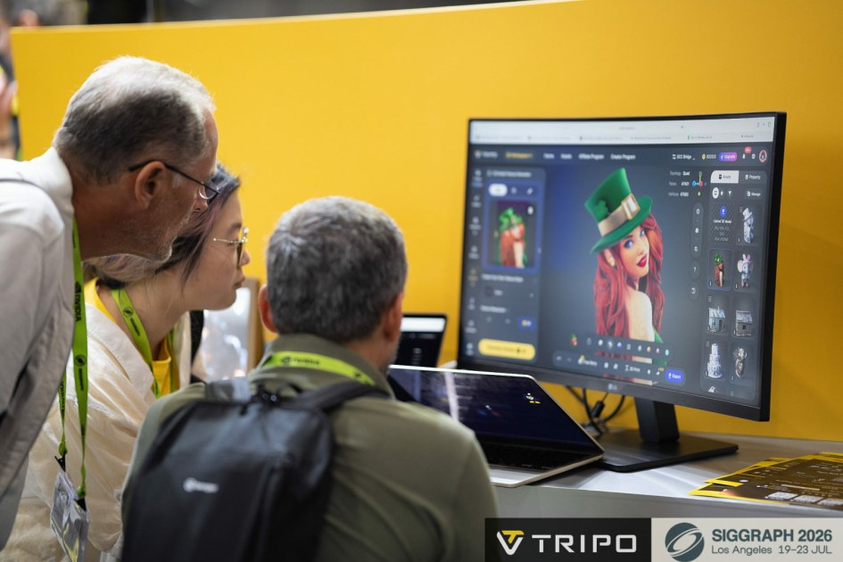

Tripo Smart Mesh：AI 3D 開始把「乾淨拓樸」放到核心問題
最新訪談聚焦 clean topology、artist control 與 production-ready asset，而不只生成外觀。

AI 3D
★★★★★
先測
Retopo Quality
完整分析
AI 3D Production Delta
Tripo 最新訪談把重點從『生成形狀』轉向 Smart Mesh 與可用拓樸，明確把 clean topology、artist control 與 production-ready asset pipeline 放在核心。對 AI 3D 評估來說，這比單看高模外觀更接近真正能否進遊戲製作。
對遊戲美術的意義
值得把測試標準從單一生成品質擴充到 edge flow、局部細節保留、UV/貼圖延續、低模可編輯性與後續 rig/deform。若 Smart Mesh 能穩定縮短 retopo，AI 3D 才真正開始吃到 production 成本。
實測建議
用同一個角色與硬表面 Prop，比較 Tripo Smart Mesh、Meshy 7 與人工 retopo：記錄三角面數、關節 edge loop、薄片/凹槽保留、UV 可用性與修模分鐘數，不只比較第一眼外觀。